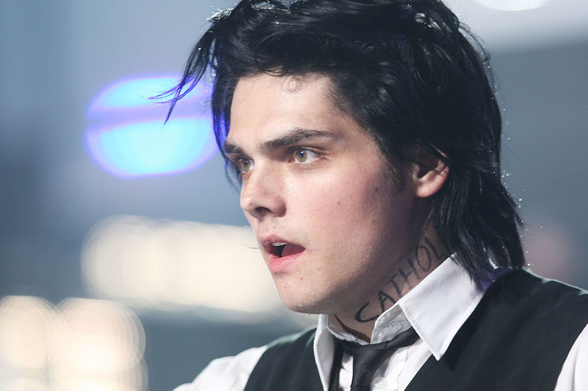

Gerard Way
Gerard Arthur Way (Summit, Nueva Jersey; 9 de abril de 1977)1 es un músico,
cantante y escritor de cómics estadounidense, conocido por ser el vocalista de la banda
My Chemical Romance, cantante en solitario, autor del cómic The Umbrella Academy y
fundador del sello editorial Young Animal (de DC Comics).
Descrito como «una estrella de rock en el más puro sentido»4 y como «una voz muy
reconocible a mediados de los años 2000»,5 Way es el fundador, vocalista y compositor
de la banda de rock My Chemical Romance, con la que produjo una discografía de —principalmente-
cuatro álbumes, entre 2001 y 2013. En 2014 anunció su carrera solista y publicó Hesitant alien,
su primer álbum; luego realizó su primera gira en solitario.
En su carrera como historietista —elogiada por la crítica—,6 publicó entre los años 2007 y
2009 dos series limitadas de su cómic The Umbrella Academy, una de las cuales recibió un premio Eisner,
y que serían adaptadas desde 2019 en una serie televisiva de Netflix. En 2013 publicó la serie
The true lives of the Fabulous Killjoys, a modo de continuación de la trama descrita en el cuarto y
último disco de su banda. En 2016 fundó Young Animal, subsello editorial de DC Comics en el que
supervisa o escribe varias historietas para público adulto, entre ellas, La Patrulla Condenada.
